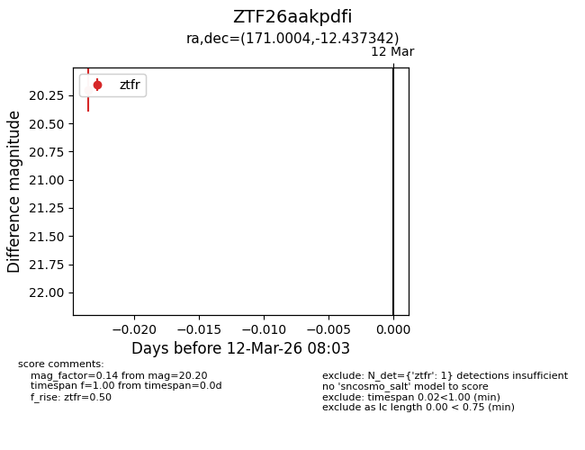
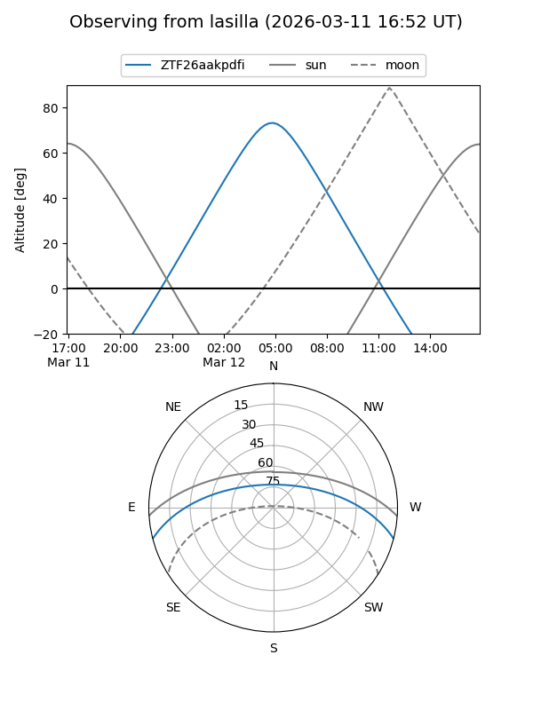
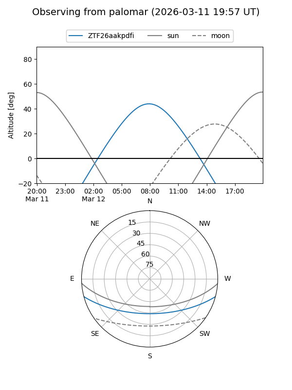
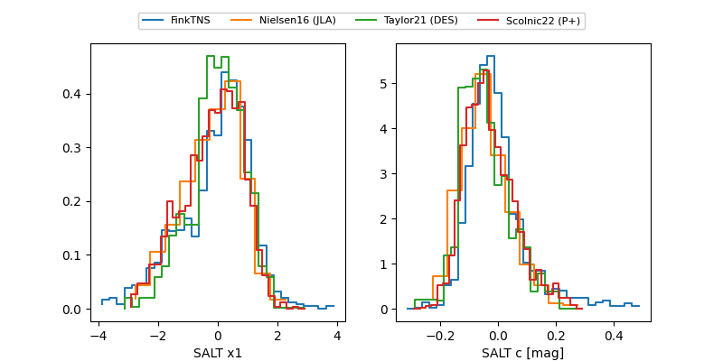

ZTF26aakpdfi
Target ZTF26aakpdfi at 2026-03-12 08:05
Aliases and brokers:
FINK: link
Lasair: link
ALeRCE: link
alt names
ZTF26aakpdfi (ztf,fink_ztf)
Coordinates:
equatorial (ra, dec) = 171.0004,-12.43734
equatorial (HMS+DMS) = 11:24:00.10,-12:26:14.43
galactic (l, b) = (271.9251,+45.10567)
Flags:
Photometry:
last ztfr=20.20
1 ztfr detections
Lightcurve

Visibility


Additional plots
